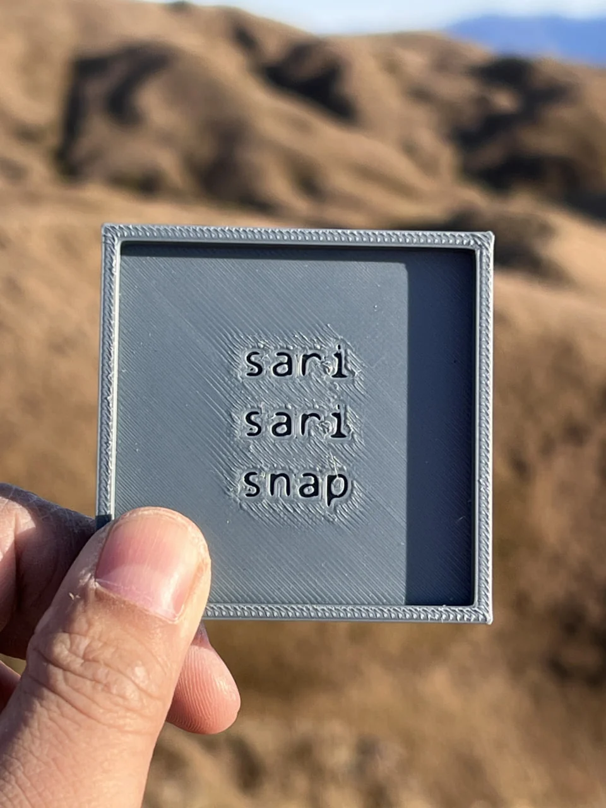
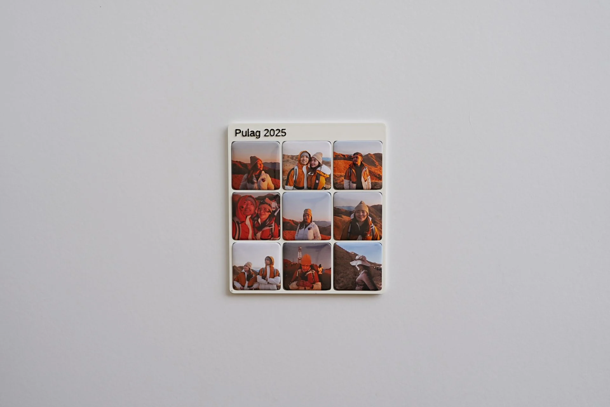
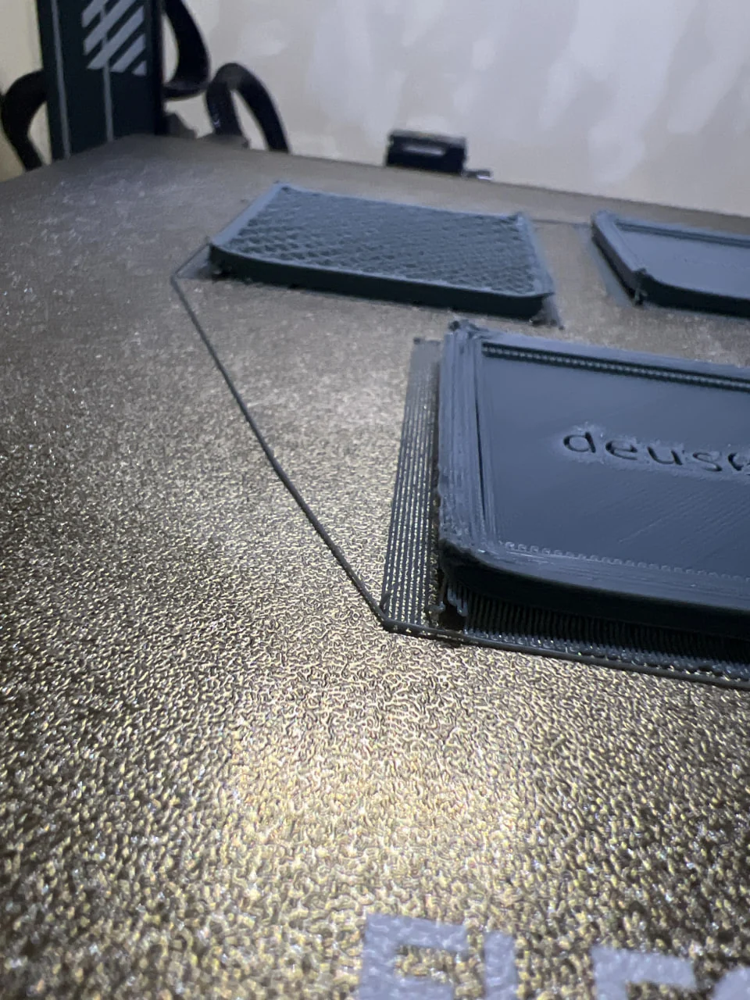
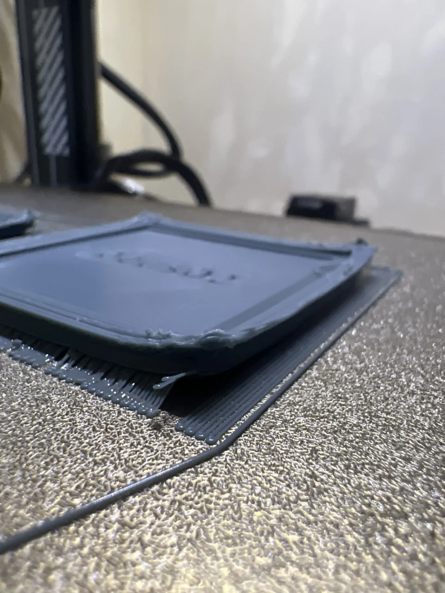
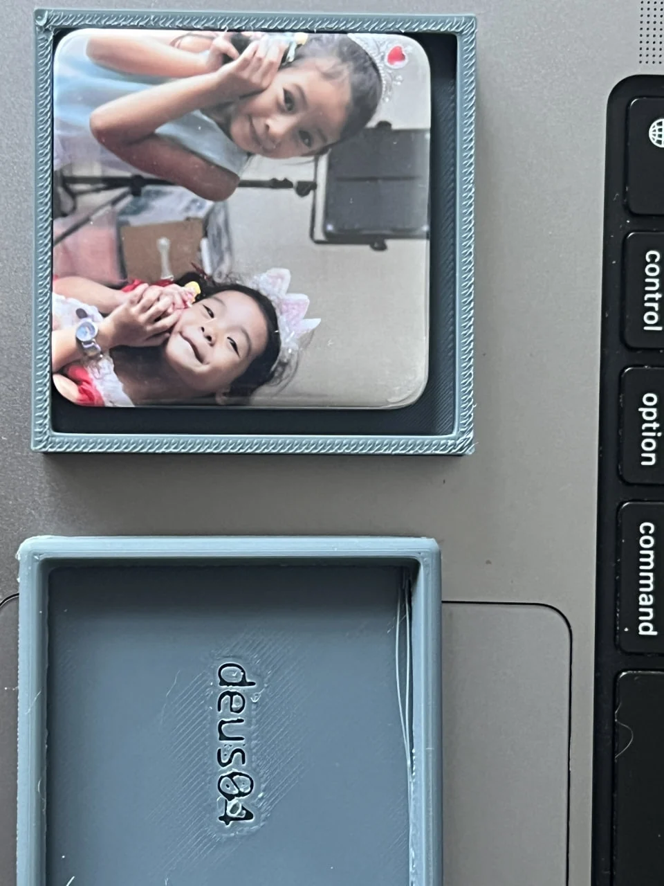
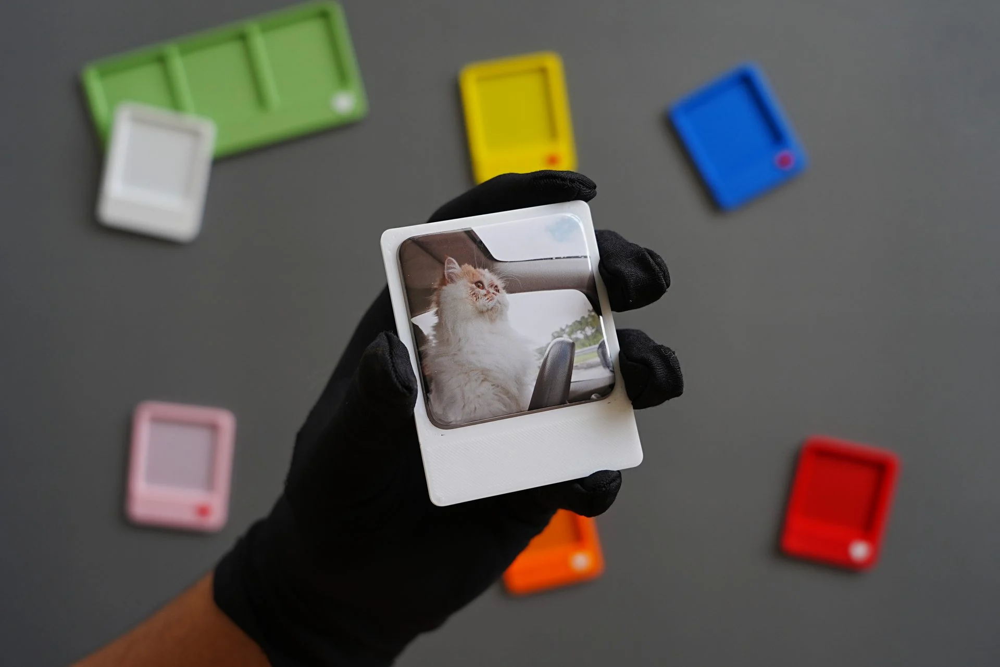
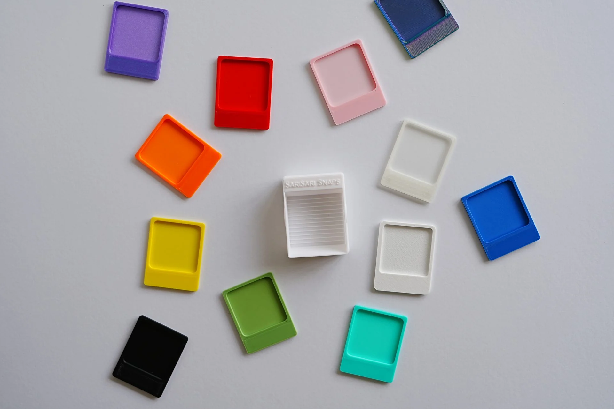
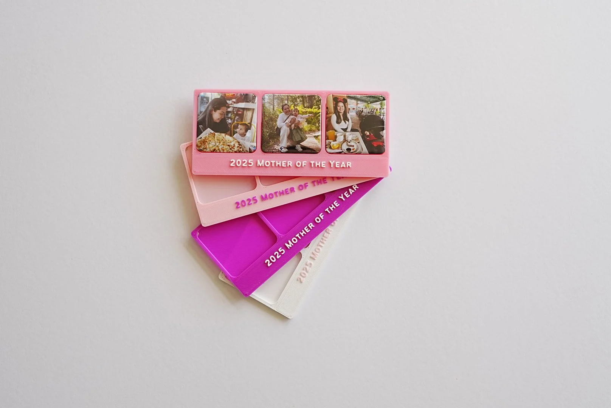

The first SariSari Snap broke nearly every rule I later established.
It was rough, empty, centrally branded, and surrounded by a decorative border. The frame was asking to be seen before it had learned how to serve a photograph.


The first one went to Pulag as something to offer the gods to play with. The joke gave the project its life; the work that followed gave it rules.
The printer turned clean geometry into a physical argument.
A render can hide the exact place a design stops working. The print bed cannot. Lifted corners, rough first layers, excess filament, and damaged edges made every weak decision visible at full scale.


I stopped drawing products and built a rule.
The system begins with one fixed square photograph pocket. Columns, rows, and orientation change; the pocket, spacing, edge conditions, and lower personalization zone remain governed by the same OpenSCAD model.
The shared ruler
- Solo
- Double Take
- Triple Treat
- Wide Shot
- Classic
- Six Pack
- Eight Tiles
- Gridstagram
- Darling Dozen
Nine named formats, from one photograph to twelve. Orientation and scale change; the underlying product rule does not.
The first fit test taught me what the frame was for.
Once a real photograph entered the gray prototype, the hierarchy became obvious. The object did not need a stronger identity. It needed to become a precise pocket, a reliable grip, a quiet boundary, and a small field for meaning outside the image.


Hold the photograph precisely. Then get out of its way.The principle that survived every later decision
A color remained only if it could survive beside a photograph.
The first palette was broad, saturated, and often glossy. Testing those colors with real images exposed what a swatch could not: yellow dirtied pale areas, saturated edges pulled attention away from faces, and gloss produced highlights that competed with the print.

The surviving palette is matte: White, Black, Sage, Blush, and Dusty Blue. The test was not whether a color looked good alone; it was whether the photograph still arrived first.
Personalization stopped before it became decoration.
Text stays outside the photograph grid, on one line, inside a dedicated lower zone. The available length scales with the frame width and is recomputed when a frame rotates. A small stamp can share the same center line, but neither text nor symbol is allowed to compete with the photographs.

One frame became a family without becoming nine unrelated products.
The final test was not whether one frame looked resolved. It was whether the same decisions could survive from Solo to Darling Dozen: more photographs, different orientations, and a much larger footprint without inventing a new object each time.

Most of the improvement came from removal: fewer colors, fewer arbitrary dimensions, fewer decorative gestures, and clearer limits. The frame remains present enough to hold the photograph—but quiet enough for the memory to arrive first.